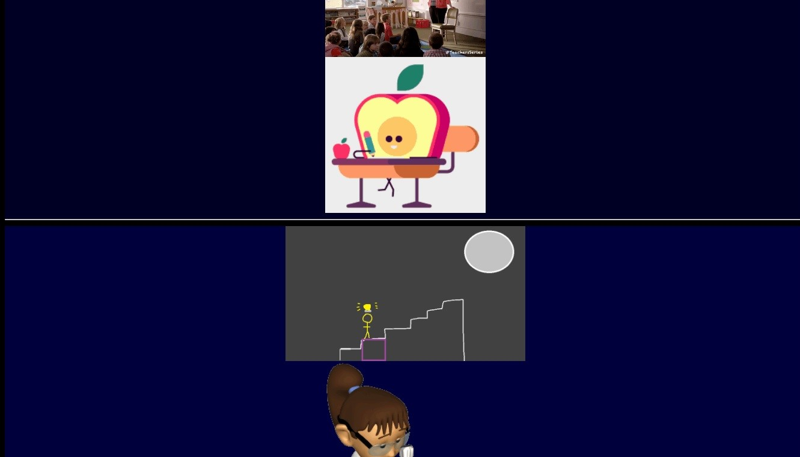

With technology being such a fascinating part of our present-day world, the concept of an English class centered around digital media stood out to me from the start. Admittedly, traditional writing classes in high school were never my favorite, but the concept of this course seemed not only interesting but could be an opportunity for me to learn how to convey concepts with all the technology available to us today.
In high school, I was always fond of an opportunity to use Word or PowerPoint, mostly because it felt a lot easier than having to write or draw by hand. I feel that I never really used more than the basic tools these programs offer. Along with the belief that I was “not very creative or artistic”, these challenges made me wonder how I would fare on the artifacts.
Before starting each artifact, I looked at the texts we were analyzing in our course that week for inspiration. I asked myself what CAT (conceptual, aesthetic, technical) elements made each project clear, effective, and thought-provoking. For brainstorming, I relied a lot on an exercise we did with our professor during the first few weeks of class. She asked us a series of questions and encouraged us to write down ideas as they came. I wrote down several ideas in my journal each time I brainstormed, and I would always ask myself what idea seemed the most interesting for a project.
Another strategy I used throughout the course was creating a storyboard for the concept of each artifact.
On the left, an initial draft of The Meaning of You, compared to the final product on the right.
While the storyboard did not always end up looking like the final artifact, it helped me visualize how I wanted the project to look and how I wanted to make the viewer feel. For example, I wanted Our Forgotten Goal to represent education as a lifelong opportunity to live, learn, and grow, so I drew a series of upward stairs that gradually got more colorful. Additionally, drawing out my ideas helped me decide what software I would use to create the project.
The artifacts were mostly an individual process, but there was a point in the process where I would meet up with a few of my peers to present a draft and receive constructive critique. It was cool to see how even though we all received the same assignment, we always had very unique and interesting ideas. Whenever I brought a draft to the group, I made it a point to not only ask questions about my project but on theirs as well. The feedback I received was helpful as a guideline throughout the creation process.
After going through this process several times, I ended up with three unique artifacts, all of which allowed me to grow on multiple aspects of the WOVEN spectrum.
Our Forgotten Goal tells a story about the benefits of education but uses GIFs instead of words to do so. I had to decide how to make the sequence of GIFs clear without reducing the complexity of the story. I added the GIFs to the page with HTML and had to use CSS to make sure the layout was simple and easy to navigate. Two aesthetic elements I used to strengthen the concept were size and color.
Instead of having only the GIFs, each step of the page was bigger and brighter. This use of aesthetic elements taught me that even the design and layout of a website affects how we view a concept.
La Bestia is a story about the train of the same name where immigrants embark to escape the poverty and violence of their home countries. The story has a set of choices to lead to different endings. During the brainstorming and creation of the story, I was inspired a lot by both The Walking Dead and Depression Quest.

The impossible choice element, inspired by Depression Quest.
Using Twine, I knew the use of choices could be used to make the reader feel as if it was their story. The protagonist was written as a “blank slate”, to make the reader feel as if they are actually going on the journey, instead of simply following a character along. Like my previous artifact, I used color to represent emotions, but I also had to learn the features of the platform to create a fast-paced and urgent story. My peers suggested that I stick to the default Twine aesthetic and maintain a very snappy style of writing. On my part, I also learned that Twine has a feature where users can force the reader to make decisions in a limited amount of time. With these elements, I wanted to emulate the sense of fear and not knowing what to expect when immigrants embark on such a journey.
The Meaning of You was a net art website whose concept was to show students not to let the worries of everyday life drag us down. Going back to creating an HTML website, I had to find out how I wanted the user to interact with my website.

The main fading technique in The Meaning of You.
It was here that I improved on my visual and electronic communication, as I had to use colors to represent a wider range of emotions and let the user interact with those colors. Because the texts of the project were meant to be relatable, I had to frequently put myself in the shoes of the audience. How could I write a short yet effective set of texts that resonate with people? I had to draw on my own experience and think about what students go through on a daily basis.
While my journey in this class has come to an end, there are still areas that I am looking forward to exploring. First, I ended up using HTML and CSS in all three projects in some fashion.

CSS and JavaScript used in The Meaning of You.
I learned a few basic concepts about these languages in high school, but I ended up having to do some research for a few of the technical elements I wanted to incorporate. For The Meaning of You, I had to learn how to use JavaScript with HTML for the first time when I added the fading technique. I am really looking forward to learning more about these three languages in my spare time and trying to create more powerful websites.
Another skill I would want to improve on is creating hypertext stories with Twine. I had never heard of hypertext fiction before, but the week we focused on them was probably my favorite week in the course. I initially struggled with keeping the whole web of choices under control, but it was an interesting challenge coming up with which decision would lead to what ending. Overall, it is a way to convey a concept to an audience in a fun and often game-like manner.
I always preferred my math and computer science courses in high school, but I enjoyed how I could use my constantly use my interests in this class. It felt like a place where my mind could fly freely as I decided what concepts, elements, and strategies I wanted to use. Given that each artifact gave us two options for what to create, I am interested in going back and seeing what other projects I could have created. While my WOVEN communication improved, I also feel that I was able to use my creativity in ways that I do not often get to do.